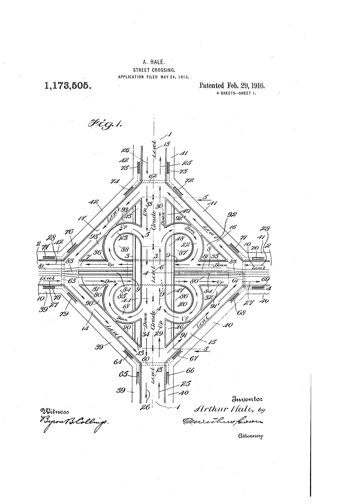
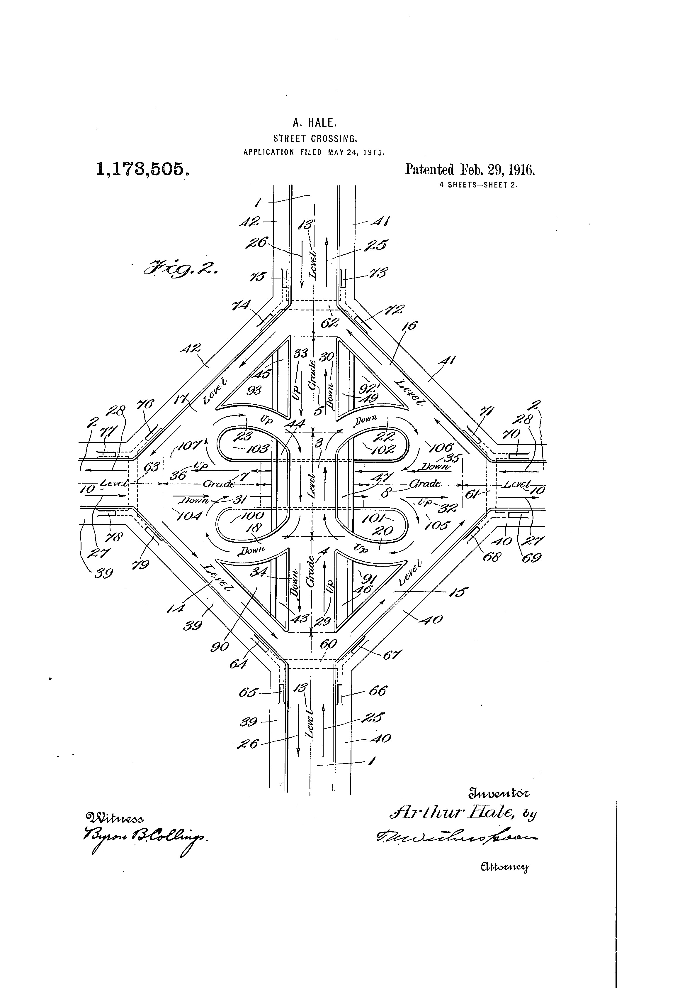
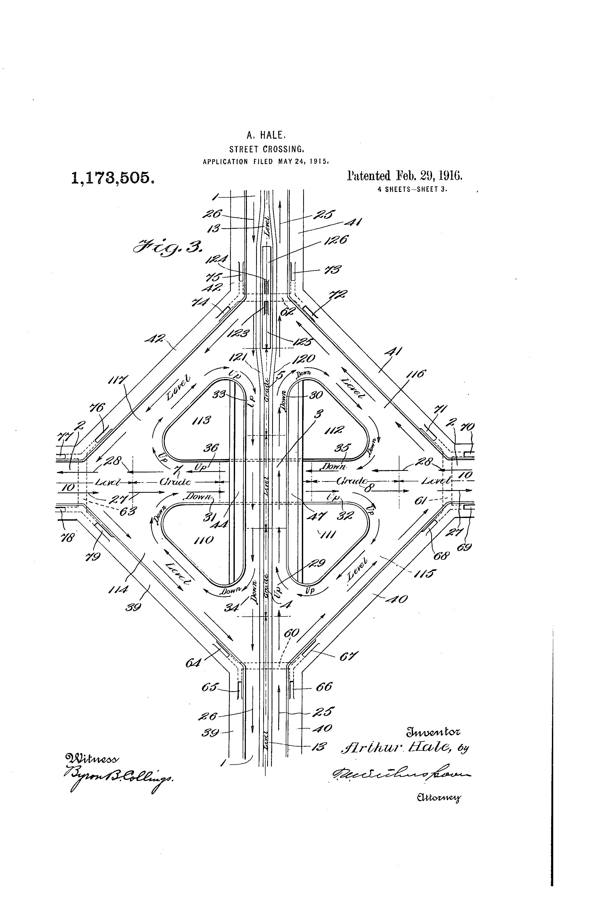
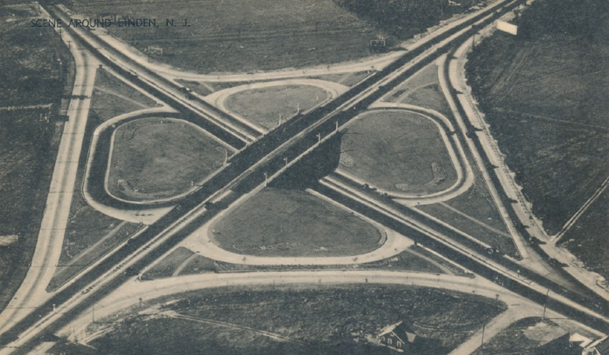
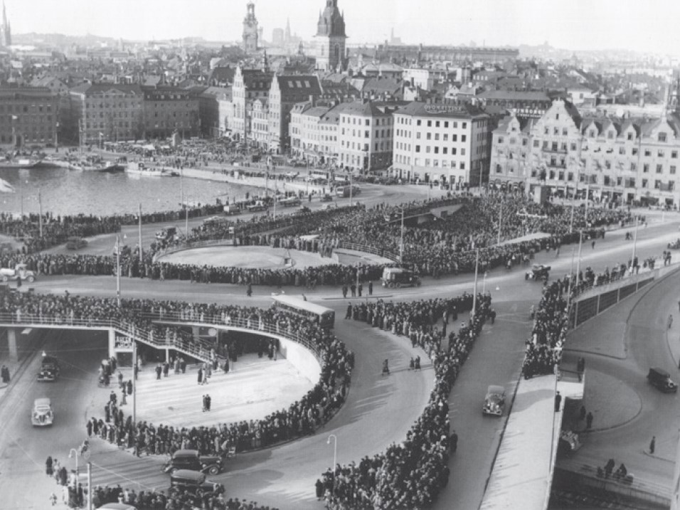
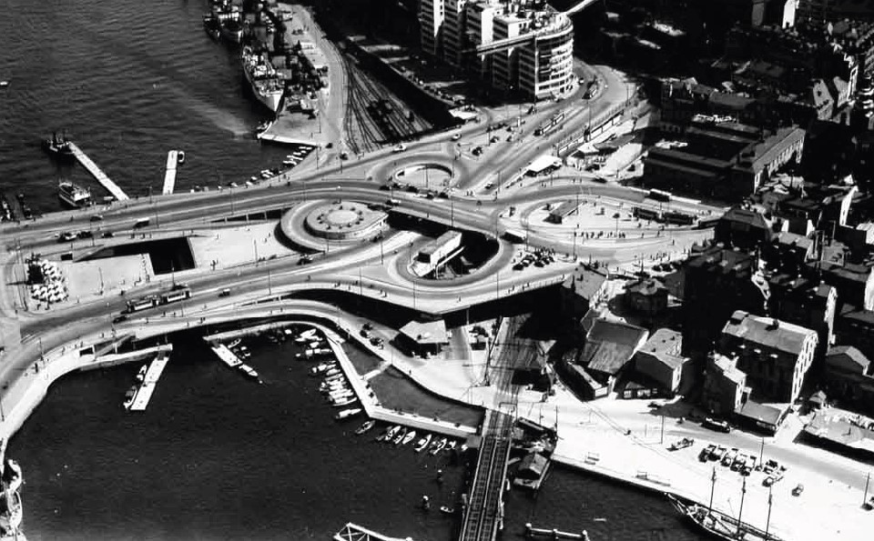
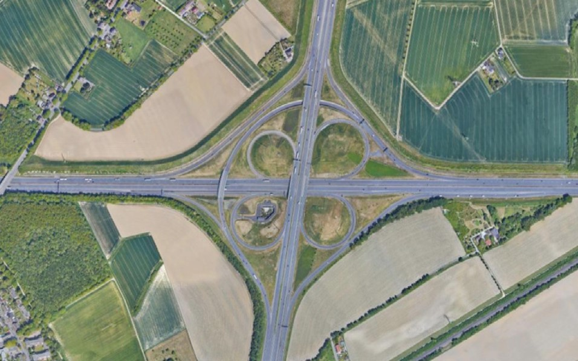
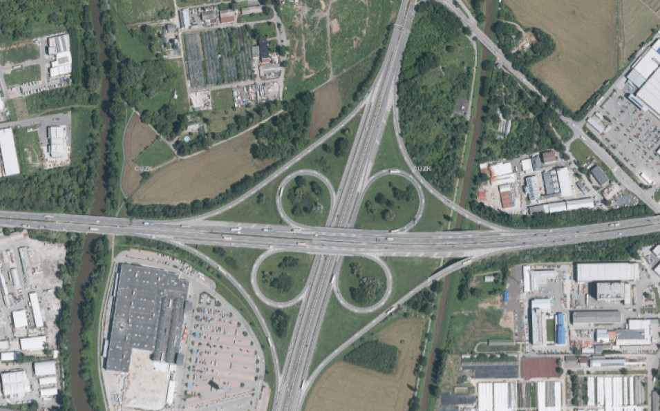

Historie
Od prvního patentu v New Jersey, přes Stockholm a Kamener Kreuz, až po pražský okruh — sto let mimoúrovňových křižovatek.
Ve světě
Auta v New Jersey
Potřeba mimoúrovňových křižovatek se začala objevovat současně s nárůstem automobilové dopravy, který zažil svůj první boom ve 20. letech minulého století. Se zvýšením hustoty proudu začalo být čím dál obtížnější odbočení vlevo a s ním rostl i počet nehod tohoto typu. Významně se problém začal projevovat v New Jersey. V roce 1909 zde byla ustanovena State Highway Commission, která měla na starosti zlepšení dopravní infrastruktury.
V roce 1916 bylo ve státě New Jersey registrováno přes 100 000 vozidel (v roce 1906 pouze 4,5 tisíce). New Jersey leželo na spojnici mezi New Yorkem a Filadelfií a vzrůstající suburbanizace a tovární čtvrti mimo města způsobovaly velkou zátěž místních komunikací. State Highway Commission se proto v roce 1917 stala plnohodnotným departmentem státu a začala plánovat státní systém 15 dálnic, který v následujících letech narůstal až na 43 dálnic v roce 1927.[1]
Nejen na těchto dálnicích se začala zvyšovat nehodovost na křížení a stoupala také potřeba po plynulém převedení dopravy. Jednou z možností byly kruhové objezdy, které eliminovaly krizové odbočení vlevo — v New Jersey se začaly budovat už od roku 1905. Pro dálnice ale brzy nestačily: doprava na nich musela výrazně zpomalit, nebo byly poloměrové oblouky příliš veliké.
První patent, 1916
Prvotní návrh dnes již není možné s jistotou ověřit — některé zdroje mluví o francouzském nápadu, jiné se odkazují na zrealizovanou křižovatku v Argentině v provozu už ve dvacátých letech. S určitostí však lze dohledat první patent: ten si nechal zapsat americký stavební inženýr Arthur Hale dne 24. 5. 1915 pod kódem US1173505A se čtyřmi výkresy.[2]
K patentu mimo jiné doplnil: „This invention relates to street crossings and has for its object to provide a construction suitable for congested crossings which will render it unnecessary for traffic going in either direction on one street to ever cross at grade the traffic going in either direction on the other street; or even to cross its own street at grade when it wishes to reverse its direction of travel."
Křižovatka se vyznačuje velmi ostrými rameny a krátkými průplety. Návrh řeší pouze snížení křižných bodů na nulu, počítá ale s nízkou rychlostí vozidel — chybí odbočovací a připojovací pruhy.



Woodbridge Cloverleaf, 1929
New Jersey Department odstartoval v roce 1928 stavbu NJ Road 25 (dnes značena jako US 1 / NJ 25) mezi Filadelfií a New York City. U Woodbridge křížila s významnou NJ Road 4 (dnes NJ 35). Úsek budovala firma Rudolph & Delano. Inženýr Edward Delano[3] přišel se dvěma možnostmi křížení — kruhovým objezdem a „cloverleaf" křížením, které viděl na obálce časopisu z dálnice v Buenos Aires.[1]
Zprovozněna byla v roce 1929.

První evropská mimoúrovňová křižovatka
V Evropě jako první patentoval mimoúrovňové křížení Švýcar Will Sarbach dne 15. 10. 1928 — stejný čtyřlístkový typ. Návrh byl představen pro projekt HaFraBa, předchůdce dnešního dálničního systému v Německu propojující Hamburg, Frankfurt nad Mohanem a Basilej.
První mimoúrovňová křižovatka v Evropě byla otevřena ve Švédsku ve Slussen v centru Stockholmu v roce 1935 (v současné době je přestavována). V následujícím roce další v Lipsku — dnes již zmodernizovaná mezi dálnicemi A9 a A14. Za první plně mimoúrovňovou křižovatku v Evropě však lze považovat až Kamener Kreuz[4] otevřenou v roce 1937 na A1 a A2, blízko Dortmundu.
Čtyřlístkové křižovatky záhy narazily na maxima své kapacity — průpletové pruhy byly příliš krátké. Dříve poměrně levná řešení s jedním mostním objektem se musela začít přestavovat. Příkladem takové transformace je právě Kamener Kreuz, který prošel mezi lety 2006 a 2009 významnou proměnou: zrušila se jedna zpětná rampa („lístek") a přidala se rampa přes tři kvadranty.



Praha
Velká Praha a první komise
Plánovaný rozvoj Prahy s koncepcí automobilové dopravy lze rozpoznat až v roce 1920 po přijetí zákona o Velké Praze, který stanovil legislativní základy rozvoje města. Zákon umožnil vzniknout Státní regulační komisi pro hlavní město a okolí, jejímž úkolem bylo plánovat a řídit stavební rozvoj hlavního města.
Komise začala pracovat i na návrhu dopravního systému, který se orientoval na okruh kolem historického jádra, ke kterému byla předměstí připojena radiálami. Tento převážně radiální systém se s postupným nárůstem dopravy začal projevovat nevhodně — a nastal úkol najít vhodnější řešení.
Dopravní soutěž vyhrál v roce 1930 prof. arch. Krejcar, který pro Prahu navrhl tečnový trojúhelník: jeho vrcholy se nacházely na Zbraslavi, Kbelích a Přední Kopanině. Jižní část byla doplněna tangentou (odpovídající dnešní trase Městského okruhu). Úskalím návrhu byla velká vzdálenost od centra a necitlivé trasování vzhledem k morfologii terénu.
Plán Státní regulační komise z roku 1937 počítal s návrhem okruhu kolem urbanizovaného území, ponechával však centrální charakter komunikační sítě. Okružní komunikace měla procházet částmi Prosek, Kbely, Kyje, Štěrboholy, Hostivař a Spořilov.
Rošt, ZÁKOS, magistrála
Během druhé světové války a v tíživé ekonomické situaci po ní se nárůst automobilové dopravy výrazně zpomalil. Směrný územní plán z roku 1948 významně zmenšil okružní komunikaci — měla vést kolem Kobylis, Proseku, Hloubětína, přes Hrdlořezy, Malešice, kolem Strašnic, v západní části po trase dnešního Městského okruhu.
Novou koncepci přinesly až 60. léta po provedení Generálního dopravního průzkumu v Praze, na základě kterého bylo vytvořeno dopravní řešení roštového systému. Ukotveno bylo v návrhu Směrného územního plánu z roku 1964. Rošt se skládal ze dvou tangent a tří magistrál doplněných o vnější okruh.
V 70. letech docházelo kvůli nárůstu automobilové dopravy k přechodu opět na systém radiálně okružný (ZÁKOS — základní komunikační systém, 1974) založený na 11 radiálách a třech okruzích. V obou posledně zmíněných systémech byla zařazena i druhá severo-jižní magistrála, která se jako první realizovala. Ne však ve své původní podobě — kvůli omezeným investicím se před budovou Státní opery rozdvojila a nevedla už po plánované estakádě za Národním muzeem, ale v jedné stopě před ním.
Dva okruhy a šest radiál
Současná hierarchie dopravní sítě vychází z Územního plánu přijatého v roce 1999. Magistrát rozhodl o zrušení Vnitřního okruhu a upravil trasu Středního okruhu. Nadřazený systém tak zahrnoval okruhy už jen dva: vnější Pražský a vnitřní Městský. Okruhy propojuje celkem šest radiál: Chodovská, Chuchelská, Prosecká, Vysočanská a Štěrboholská, doplněná Spořilovskou spojkou. Hlavní myšlenkou je ochrana města před průjezdnou dopravou pomocí Pražského okruhu a regulační prvek vnitroměstské dopravy pomocí Městského okruhu.
Na Pražský okruh (dálnici D0) jsou v rámci celostátní dopravní sítě napojeny radiálně dálnice D1 (Brno), D5 (Plzeň), D6 (Karlovy Vary), D7 (Slaný), D8 (Ústí nad Labem), D10 (Mladá Boleslav) a D11 (Hradec Králové). Plánovaně bude na okruh napojeno 9 radiálních dálnic (kromě výše jmenovaných přibudou D3, D4, D9) a 2 silnice I. třídy I/2 a I/12.
Z Městského okruhu je dnes v provozu většina trasy, zbývající východní část by měla být hotová do roku 2026. Z dopravního hlediska ji dnes nahrazuje Průmyslový polookruh. Absence jihovýchodní části Pražského okruhu se negativně projevuje v urbanizované části města — tranzitní doprava je dnes vedena ulicemi 5. května, Spořilovskou a Brněnskou.[5]
První v Česku
V Česku byla první plně mimoúrovňová křižovatka zprovozněna 4. 10. 1978 na úseku D1 a D2 u Brna. Šlo o čtyřlístkový typ, podobný americkému cloverleafu, který se v té době rozvíjel po celém světě.
V Praze následovaly stavby v rámci budování severojižní magistrály a postupně i Městského a Pražského okruhu. Většina pražských mimoúrovňových křižovatek vznikla v 70. a 80. letech, další vlna pak po roce 2000 v souvislosti s dostavbou Pražského okruhu.

Zdroje
- SICA, Dave; WEISGERBER, Eric. The Woodbridge Cloverleaf: Onramps to Innovation. YouTube, 2022. Dostupné z: youtube.com/watch?v=25ujQBf3ads [cit. 8. 5. 2022]
- HALE, Arthur. Street crossing. US patent 1173505A, podáno 24. 5. 1915. Google Patents. Dostupné z: patents.google.com/patent/US1173505 [cit. 8. 5. 2022]
- Dr. Patrick's Postcard Roadside: Woodbridge Cloverleaf. Society for Commercial Archeology. Dostupné z: sca-roadside.org/dr-patricks-postcard-roadside-woodbridge-cloverleaf [cit. 8. 5. 2022]
- Verkehr: Koalition will Standstreifen bei Stau freigeben. WELT. Dostupné z: welt.de/motor/article4867889 [cit. 9. 5. 2022]
- SATRA, spol. s r.o. Historický vývoj názorů na uspořádání komunikační sítě, 2012. Dostupné z: mestskyokruh.info/.../historicky-vyvoj [cit. 7. 2. 2017]
- Obr. 02 — sca-roadside.org, dostupné 9. 5. 2022. Obr. 03 a 04 — Wikimedia Commons, dostupné 9. 5. 2022. Obr. 05 — © maps.google.com, dostupné 9. 5. 2022. Obr. 06 — © ČÚZK, dostupné 9. 5. 2022.
- Text vychází z kapitoly Historie bakalářské seminární práce, Kodet T., FA ČVUT, 2022.